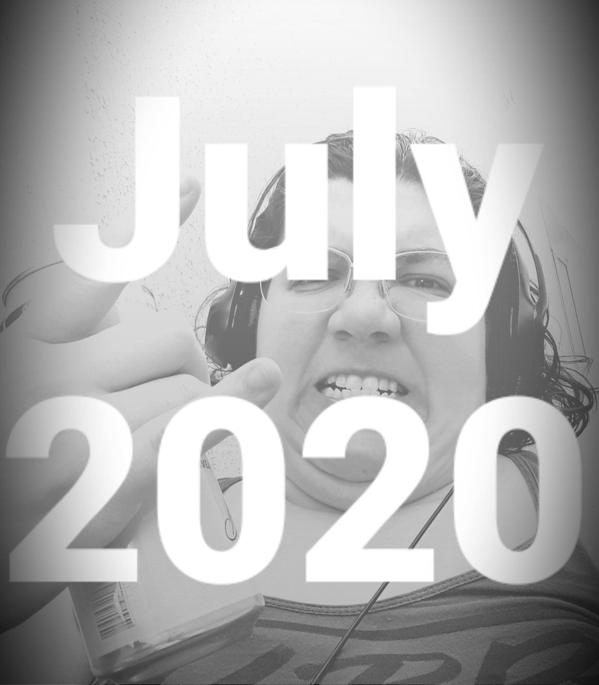

August 7, 2020

My Personal Playlist: The Hits of July 2020
Listen on Spotify
WARNING: I am an emotional music listener and my playlists usually reflect my mood.
July was a very difficult month for me. This playlist reflects the emotional turmoil that I was feeling, so don't be surprised there are no 'feelgood' songs in it. Lots of Gojira and Mastodon, though.
It is heavy and it is intense. If you're into it, enjoy!
- New Colossal Hate - Lamb of God
- L'enfant sauvage - Gojira
- Oblivion - Mastodon
- March to the Sea - Baroness
- The Gift of Guilt - Gojira
- Orison - Soen
- Jaguar God - Mastodon
- Flying Whales - Gojira
- A Little Bit Off - Five Finger Death Punch
- Stranded - Gojira
- Bleed - Meshuggah
- Laid to Rest - Lamb of God
- Blood and Thunder - Mastodon
- Walk - Pantera
- Ghost of Perdition - Opeth
- Demiurge - Meshuggah
- The Motherload - Mastodon
- Silvera - Gojira
- Walk with Me in Hell - Lamb of God
- Cowboys from Hell - Pantera
- Symphony Of Destruction - Megadeth
- Master Of Puppets - Metallica
- Born in Dissonance - Meshuggah
- Hail to the King - Avenged Sevenfold
- Die MF Die - Dope
- Shock Me - Baroness
- The Price - Leprous
- Physical Education - Animals As Leaders
- I am Colossus - Meshuggah
- The Cell - Gojira
- The Grudge - Tool
- Blod & Stal - Besaerk
- I Feel Alive Again - Killswitch Engage
- Schism - Tool
- Sectarian - Soen
- Windowpane - Opeth
- Marigold - Caligula's Horse
- Steambreather - Mastodon
- Take My Bones Away - Baroness
- Springfield - Anathema